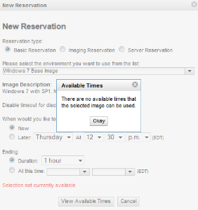

There are several advanced options for each image that can be modified. Normally, these options do not need to be modified. However, there are times where it is useful to modify them.
When a reservation is made, the VCL scheduler compares the following image settings to the corresponding settings of VCL computers in order to select a suitable computer for the image. Configuring the following image settings allows you to restrict which computers may be assigned to reservations for the image. Care should be taken when modifying these settings. If any of these settings is configured to be so restrictive that none of the computers meet the image requirements, it will not be possible to make a reservation for the image. When this is the case, users will be presented with a message stating There are no available times that the selected image can be used when attempting to make a reservation for the image:

| Required RAM (MB) | This is the minimum amount of RAM required for the image and is specified in megabytes (MB). This is useful if the image has software installed that will not function properly unless the computer the image is loaded on contains a minimum amount of RAM. When a reservation is made, the VCL scheduler compares the image’s Required RAM setting to the RAM setting of available computers. Computers having a RAM setting less than the image’s Required RAM setting are ignored. The scheduler will not assign a reservation to a computer that has a smaller RAM than the image’s Required RAM setting. For virtual machine images, a new virtual machine is instantiated when an image is loaded. This setting determines the amount of RAM the virtual machine will be configured to have. There are cases where the virtual machine may be configured with more RAM than is configured for the image. If the Required RAM setting of an image is less than the minimum required for the image’s operating system, VCL ensures that the operating system’s minimum RAM requirement is met. |
| Required Cores | This is the minimum number of processors required for the image to function properly. This is useful if the image has software installed that will not function properly without a minimum number of processors. The VCL scheduler will not assign a reservation to a computer if the computer’s No. Cores setting is less than the image’s Required Cores setting. For virtual machine images, this setting determines the number of processors a virtual machine is configured to have. Whether the virtual machine is assigned this number of sockets, cores, or logical processors depends on the type of hypervisor being used and on the operating system of the image. Note: The image Required Cores setting and corresponding computer No. Cores setting should be aligned – they should refer to the same thing. It is recommended that these settings refer to logical processors rather than sockets or physical cores. For example, if a physical computer has dual 4-core processors with hyperthreading enabled, the computer’s No. Cores setting should be 16 (2 sockets * 4 cores * 2 logical processors per core). |
| Processor Speed (MHz) | This is the minimum processor speed required for the image to function and is specified in megahertz (MHz). This is useful if the image has software installed that will not function properly without a minimum processor speed. The VCL scheduler will not assign a reservation to a computer if the computer’s Processor Speed (MHz) setting is less than the image’s Processor Speed (MHz) setting specified here. Changing this setting is rarely required. It is primarily useful for bare-metal images when you have heterogenius physical computers with different processors. Unless you know the image requires a certain processor speed, it is recommended that the image Processor Speed (MHz) setting be set less than or equal to the Processor Speed (MHz) setting for all of the computers you intend the image to be loaded on. Although the VCL scheduler will compare this setting when selecting a valid virtual machine computer, neither the image nor the computer Processor Speed (MHz) settings are used when a virtual machine is instantiated. The processor speed of the virtual machine will be identical to the speed of the physical host in most cases. |
| Minimum Network Speed (Mbps) | This is the minimum network speed required for the image to function properly and is specified in megabits per second (Mbps). The VCL scheduler will not assign a reservation to a computer which has a lower Network setting than the image’s Minimum Network Speed (Mbps) setting. Changing this setting is rarely required. It is useful if you have sets of computers with heterogenius networking characteristics and the image should only be loaded on computers with a minimum network speed. The Minimum Network Speed (Mbps) setting is fairly arbitrary. It is up to the VCL administrator to determine if it should refer to the private, public, or some other network. It should only refer to the speed at which the VCL computer is connected to the network. It is not related to the end user’s network connection. This setting is only used by the VCL scheduler. It is not considered when images are loaded on computers. |
These following options are only related to the image. There is no corresponding computer setting to which these relate.
| Maximum Concurrent Usage | This field allows the concurrent usage of the image to be limited. It is very useful to enforce software licensing when you have a fixed number of licenses for an application installed in the image but no network license manager to limit concurrent use. Set Maximum Concurrent Usage to 0 for unlimited use. Set Maximum Concurrent Usage to a number greater than 0 to limit concurrent use of the image. The VCL scheduler will limit the number of concurrent reservations to the number specified. |
| Estimated Reload Time | This is the estimated amount of time in minutes it will take the image to be loaded. It is only relevant for the first few reservations of a new image. After that, VCL dynamically adjusts this value to estimate the load time. |
| Available for checkout | This setting controls whether the image is included in the list of environments on the Reservations page. If set to yes, the image will be included in the list. Appropriate privileges, grouping, and mapping are still required. If set to no, the image is not included in the list and users are not able to make reservations for the image directly. This is useful for cluster environments which consist of a parent image and one or more child images. In some cases, it doesn’t make sense for users to be able to make a reservation for the child images directly. If Available for checkout is set to No, the child image is still available to be reserved but only if it is a sub-image of another image. It can also be selected when making an Imaging Reservation. |
| Check for logged in user | If set to yes, VCL will perform periodic checks to determine if a user is connected to a reservation for the image. If a user makes an initial connection, subsequently disconnects, and stays disconnected for the amount of time specified by the Reconnect To Reservation Timeout value on the Site Configuration page, VCL will consider the reservation to be inactive. The reservation will time out and VCL will reclaim the computer for other users. Setting Check for logged in user to no prevents reservations for the image from timing out. Reservations for the image will persist until the reservation end time whether or not the user is connected. |
| Users have administrative access | This setting controls whether or not users to have administrative or root access to the operating system of the computer assigned to the reservation. Setting this to No prevents the user from having such access. For Linux images, users will not have sudo access. For Windows images, user accounts will not be added to the Administrators group. |
| Set computer hostname | If set to Yes, VCL will set the name of the computer when it is loaded to the hostname which resolves to the computer’s public IP address. If the computer’s public IP address does not resolve, the hostname stored in the VCL database will be used. The default value is Yes for Linux images and No for Windows and OS X images. For Windows images, the computer must be rebooted in order to change the computer name. This lengthens the amount of time it takes for the image to load and become available for the user to connect. Because of this, it should only be set to Yes for Windows images if the computer name needs to be set for the software within the image to function properly. |
| Connect Methods | The setting controls which methods will be configured and presented to the user by which to connect to the computer. See the page describing Connect Methods for more information. |
| Subimages | This is used to configure Cluster Environments. Any subimages added to an image will be loaded in addition to this image when a reservation is made for this image. |